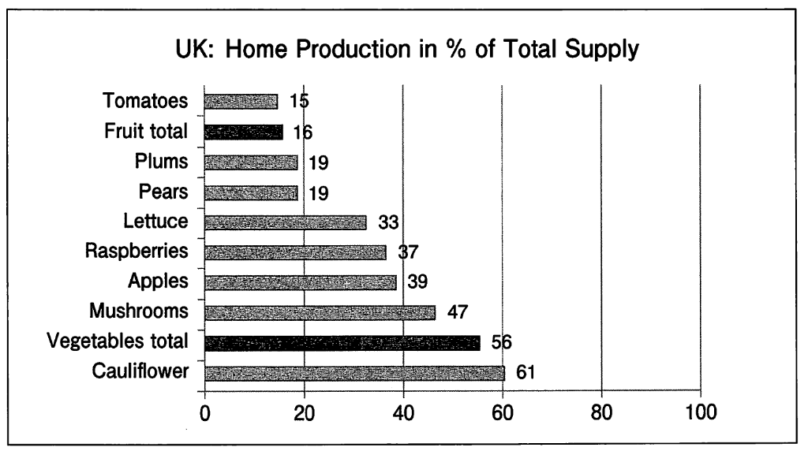

You are working on an essay about whether we should be encouraged to eat food that has been grown or produced locally. You will follow the steps below.
Step 1: Read and understand various viewpoints about locally-produced food.
Step 2: Take a position about whether people should try to eat food that was produced locally.
Step 3: Create an outline for an essay using additional sources.
[Step 1] Read various sources
Author A (environmental campaigner)
In 2005 some food activists in San Francisco challenged people to eat only locally grown food for a month. I joined in that challenge and I found it really difficult. We don't always realize how much we rely on imported food. However, I decided that instead of imported food, I should actively look for local products. They are fresher, and I can support local farmers, and less greenhouse gases are released during food transportation. Everyone should try doing this.
Author B (scientist)
I had believed that it was more environmentally friendly to buy locally-produced food. However, this idea isn't always backed up by data. When I looked at the data related to the life cycle of food, the majority of greenhouse gases are not released during the transportation phases but during the production phase. Therefore, in my opinion, if you are concerned about the environmental impact of your food, then you should not worry about where your food comes from, but how it is produced.
Author C (small grocery store owner)
I have family members who own farms in my local area, so it is easy for me to support them by stocking locally-produced food in my store. Of course, it is not possible to do this all year round, because fresh food is very seasonal. However, my customers are willing to pay a little extra for fresh local food, and I try to give them what they want. Some of my stock is imported, but I try to limit this as much as possible. I worry about the impact imported food has on the environment, so I want to buy locally-grown fruit and vegetables as much as I can.
Author D (farmer)
A lot of the food I grow is sold at a low price to big supermarket chains. Supermarkets are very powerful, and I can't really negotiate high prices for my food. However, I often sell my own vegetables at local farmers markets, too. By doing this, I can charge higher prices and I like selling to local people in my community because they value the work that I put into producing high-quality food. I would definitely encourage more people to support their local community by buying from the farmers in the area in which they live.
Author E (mother)
Buying locally-produced food sounds like a great idea, but this can lead to a very unbalanced diet. I live in the north of the country, where the weather is poor so we can't get enough food without relying on imported foods. In addition, local farmers markets sell very high-quality local produce, but it can be quite expensive. Most families don't have enough money to do that. I know some people worry about the environmental costs of importing food, but I read that transportation accounts for only a small proportion of greenhouse gas emissions in food production.
問1
Both Authors D and E mention that 25.
問2
Author B implies that 26.
[Step 2] Take a position
問3
Now that you understand the various viewpoints, you have taken a position on whether buying only locally-produced food should be encouraged, and have written it out as below. Choose the best options to complete 27, 28, and 29.
Your position: People should not be encouraged to buy only locally-produced food.
Authors 27 and 28 support your position.
The main argument of the two authors: 29.
Options for 27 and 28 (the order does not matter):
※27に入る選択肢を選んでください
問3（続き: 28の解答）
28に入る選択肢を選んでください。
問3（続き: 29の解答）
Options for 29
[Step 3] Create an outline using sources A and B
Source A
Food production is very seasonal, and the harvesting season for each type of fruit and vegetable is very short. That means that if we try to eat only local foods, there will be times of over-production and under-production. In times of over-production, the food must be stored so that it can be used for as long as possible and does not get wasted. For example, the British apple season is at its peak in autumn. Each year, up to 610,000 tons of apples are produced there in that season. For these apples to stay fresh and meet demand from customers over the year, they would have to be placed in cold storage. A study showed that it would cost more and produce twice the level of emissions to keep local British apples in cold storage for 10 months than to import apples from South America by sea to the UK when they are needed. It is far more sustainable and energy efficient to meet a country's food requirements by importing food than to store large amounts of food and keep it fresh.
Source B
A study conducted by an agriculture magazine looked at the amount of food produced in the UK compared to the total available supply of that food in stores. The graph below shows the findings of that study. Many of these foods are difficult to produce in the local climate, and have to be grown in greenhouses, making them more expensive than imported foods.

We should not encourage people to only eat locally-produced food.
Introduction
Many people these days try to avoid imported food and buy locally-produced food to help the environment and to improve their health. However, there are many problems with this idea.
Body
Reason 1: (From Step 2)
Reason 2: (Based on Source A) …… 30
Reason 3: (Based on Source B) …… 31
Conclusion
People should not be encouraged to buy and eat only locally-grown food.
問4
Based on Source A, which of the following is the most appropriate for Reason 2? 30
問5
For Reason 3, you have decided to write, "It would not be possible for people in certain countries to eat healthily by buying only locally-produced food." Based on Source B, which option best supports this statement? 31